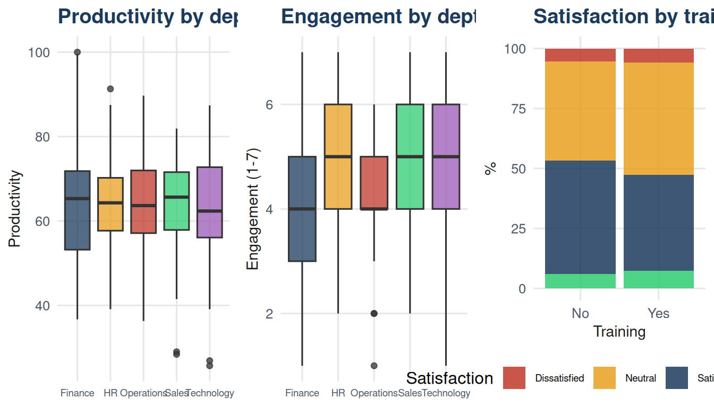

| Business question type | Outcome type | Groups | Test | Chapter |
|---|---|---|---|---|
| Is this sample mean different from a target? | Continuous | 1 | One-sample t-test | 22 |
| Do two independent groups have different means? | Continuous | 2 indep | Independent t-test (Welch) | 23 |
| Did this group change before vs after? | Continuous | 2 paired | Paired t-test | 23 |
| Do three or more groups differ in means? | Continuous | 3+ | One-way ANOVA + Tukey HSD | 24 |
| Do two groups differ (ordinal or non-normal data)? | Ordinal/non-normal | 2 indep | Mann-Whitney U | 26 |
| Did this group change (ordinal or non-normal)? | Ordinal/non-normal | 2 paired | Wilcoxon signed-rank | 26 |
| Do three or more groups differ (ordinal or non-normal)? | Ordinal/non-normal | 3+ | Kruskal-Wallis | 26 |
| Is a proportion different from a target? | Binary | 1 | One-sample z-test for proportion | 19 |
| Do two proportions differ? | Binary | 2 | Two-proportion z-test | 21 |
| Are two categorical variables associated? | Categorical | Any | Chi-square test of independence | 25 |
| Is a distribution different from expected? | Categorical | Any | Chi-square goodness-of-fit | 25 |
27 Chapter 27: Choosing the Right Test and Reading Output
27.1 Learning objectives
By the end of this chapter, the student should be able to:
- Select the appropriate statistical test given a research question, variable types, and sample structure.
- Translate a business question into formal statistical hypotheses.
- Read and report a complete test output across all test types covered in this book.
- Recognise common reporting errors and correct them.
- Apply a structured analytical workflow from question to conclusion.
27.2 Introduction
Every preceding chapter has introduced one or two specific tools. This chapter steps back and asks the prior question: given a business problem and a dataset, how do you choose the right tool? And once you have run it, what does a complete, well-reported result look like?
The answer to the first question comes from a structured decision framework. The answer to the second comes from practice with the reporting template that runs through this chapter.
The dataset for this unit contains 300 employee records drawn from a single organisation, with variables spanning continuous, ordinal, and categorical measurements. Every question posed in this chapter is answered using this one dataset, demonstrating that a well-designed dataset supports multiple analyses, each addressing a different question.
27.3 Part One: Choosing the right test
27.3.1 The four questions
Four questions determine which test is appropriate.
Question 1: What are the variable types?
The outcome variable type is the most important constraint. A continuous outcome (salary, delivery time, productivity score) supports means-based tests. An ordinal outcome (engagement on a 1-7 scale, satisfaction ratings) may require non-parametric alternatives. A binary or categorical outcome (converted: yes/no; satisfaction band: dissatisfied/neutral/satisfied) requires proportion tests or chi-square.
Question 2: How many groups are being compared?
One group compared to a fixed standard → one-sample t-test (CH22). Two independent groups → independent t-test (CH23). Two related measurements → paired t-test (CH23). Three or more independent groups → ANOVA (CH24) or Kruskal-Wallis (CH26).
Question 3: Are the observations independent or related?
Repeated measurements on the same individuals, or matched pairs, call for a paired or within-subjects design. Independent samples call for the corresponding unpaired test.
Question 4: Are the parametric assumptions satisfied?
When normality is doubtful and the sample is small, substitute the non-parametric equivalent. When the outcome is ordinal, report medians and use rank-based tests.
27.3.2 The test selection table
27.3.3 Applying the framework: five questions from one dataset
Each question below uses the same employee dataset and illustrates a different cell in Table 27.1.
27.3.3.1 Q1: Does mean productivity differ from the company benchmark of 58?
One group, continuous outcome, comparison to a fixed standard → one-sample t-test.
Code
library(dplyr)
benchmark <- 58
q1 <- t.test(df$productivity, mu = benchmark)
d1 <- (mean(df$productivity) - benchmark) / sd(df$productivity)
cat("One-sample t-test: productivity vs benchmark of", benchmark, "\n")One-sample t-test: productivity vs benchmark of 58 Code
cat("Mean:", round(mean(df$productivity), 2),
"| t(", q1$parameter, ") =", round(q1$statistic, 3),
"| p =", round(q1$p.value, 4),
"| d =", round(d1, 3), "\n")Mean: 63.72 | t( 299 ) = 8.158 | p = 0 | d = 0.471 Code
cat("95% CI: [", round(q1$conf.int[1], 2), ",",
round(q1$conf.int[2], 2), "]\n")95% CI: [ 62.34 , 65.1 ]27.3.3.2 Q2: Do employees who completed training have higher productivity than those who did not?
Two independent groups, continuous outcome → Welch’s independent t-test.
Code
trained <- df$productivity[df$training_completed == "Yes"]
untrained <- df$productivity[df$training_completed == "No"]
q2 <- t.test(trained, untrained, var.equal = FALSE)
n_t <- length(trained); n_u <- length(untrained)
s_p <- sqrt(((n_t-1)*var(trained) + (n_u-1)*var(untrained)) /
(n_t + n_u - 2))
d2 <- (mean(trained) - mean(untrained)) / s_p
cat("Independent t-test: training vs no training\n")Independent t-test: training vs no trainingCode
cat("Means:", round(mean(trained),2), "vs", round(mean(untrained),2),
"| Diff:", round(mean(trained)-mean(untrained),2), "\n")Means: 67.63 vs 59.71 | Diff: 7.92 Code
cat("t(", round(q2$parameter,1), ") =", round(q2$statistic,3),
"| p =", round(q2$p.value,4),
"| d =", round(d2,3), "\n")t( 295.1 ) = 5.955 | p = 0 | d = 0.688 27.3.3.3 Q3: Does productivity differ across the five departments?
Three or more independent groups, continuous outcome → ANOVA with post-hoc.
Code
q3_model <- aov(productivity ~ department, data = df)
q3_tbl <- summary(q3_model)[[1]]
eta2 <- q3_tbl$`Sum Sq`[1] / sum(q3_tbl$`Sum Sq`)
cat("One-way ANOVA: productivity by department\n")One-way ANOVA: productivity by departmentCode
cat("F(", q3_tbl$Df[1], ",", q3_tbl$Df[2], ") =",
round(q3_tbl$`F value`[1], 3),
"| p =", round(q3_tbl$`Pr(>F)`[1], 4),
"| eta-squared =", round(eta2, 3), "\n")F( 4 , 295 ) = 0.203 | p = 0.9367 | eta-squared = 0.003 27.3.3.4 Q4: Is engagement score (ordinal, 1-7) associated with turnover intention?
Ordinal outcome, two groups → Mann-Whitney U test.
Code
leave <- df$engagement_score[df$turnover_intention == "Yes"]
stay <- df$engagement_score[df$turnover_intention == "No"]
q4 <- wilcox.test(stay, leave, alternative = "greater", exact = FALSE)
cat("Mann-Whitney U: engagement by turnover intention\n")Mann-Whitney U: engagement by turnover intentionCode
cat("Median (stay):", median(stay), "| Median (leave):", median(leave), "\n")Median (stay): 5 | Median (leave): 4 Code
cat("W =", q4$statistic, "| p =", round(q4$p.value, 4), "\n")W = 7138.5 | p = 0.1061 27.3.3.5 Q5: Is satisfaction band associated with department?
Two categorical variables → chi-square test of independence.
Code
ct <- table(df$department, df$satisfaction_band)
q5 <- chisq.test(ct, correct = FALSE)
V <- sqrt(q5$statistic / (nrow(df) * min(nrow(ct)-1, ncol(ct)-1)))
cat("Chi-square: satisfaction band by department\n")Chi-square: satisfaction band by departmentCode
cat("X2(", q5$parameter, ") =", round(q5$statistic, 3),
"| p =", round(q5$p.value, 4),
"| Cramér's V =", round(V, 3), "\n")X2( 12 ) = 34.327 | p = 6e-04 | Cramér's V = 0.195 27.4 Part Two: Reading and reporting output
27.4.1 The complete reporting template
Every reported test should include: the test name, the null and alternative hypotheses, the test statistic with degrees of freedom, the p-value, the confidence interval (where applicable), the effect size, and a plain-language conclusion.
| Element | One-sample t | ANOVA | Chi-square |
|---|---|---|---|
| Test name | One-sample t-test | One-way ANOVA | Chi-square test |
| Null hypothesis | mu = benchmark | All group means equal | Variables independent |
| Alternative hypothesis | mu ≠ benchmark | At least one differs | Variables associated |
| Test statistic | t = value | F = value | X2 = value |
| Degrees of freedom | n - 1 | k-1, N-k | (r-1)(c-1) |
| p-value | p = value | p = value | p = value |
| Confidence interval | 95% CI [lo, hi] | Not standard for ANOVA | Not standard |
| Effect size | Cohen's d | Eta-squared | Cramér's V |
| Plain-language conclusion | One sentence for a manager | One sentence for a manager | One sentence for a manager |
27.4.2 Applying the template: complete reports for five analyses
| Analysis | Test | Result | Conclusion |
|---|---|---|---|
| Q1: Productivity vs benchmark | One-sample t | t(299) = 8.16, p = 0, d = 0.471, 95% CI [62.3, 65.1] | Mean productivity differs significantly from the benchmark. |
| Q2: Training effect on productivity | Independent t (Welch) | t(295) = 5.96, p = 0, d = 0.688 | Trained employees show significantly higher productivity. |
| Q3: Productivity by department | One-way ANOVA | F(4,295) = 0.2, p = 0.9367, eta2 = 0.003 | No significant difference across departments. |
| Q4: Engagement by turnover intention | Mann-Whitney U | W = 7138.5, p = 0.1061, medians: 5 vs 4 | No significant engagement difference by turnover intention. |
| Q5: Satisfaction by department | Chi-square | X2(12) = 34.33, p = 6e-04, V = 0.195 | Satisfaction band and department are associated. |
27.5 Part Three: Common reporting errors
The following errors appear frequently in student work and in applied reports. Each one leads to a weaker or misleading conclusion.
| Error | Why it matters | Corrected practice |
|---|---|---|
| Reporting only 'p < 0.05, significant' | Gives no information about direction, magnitude, or precision. | Report: test statistic, df, p, CI, effect size, plain-language conclusion. |
| Omitting the effect size | A significant result in a large sample may be trivially small. | Always pair the p-value with Cohen's d, eta-squared, or Cramér's V. |
| Confusing statistical with practical significance | p < 0.05 means the effect is detectable, not that it matters. | Assess practical importance separately; consider effect size and business context. |
| Reporting the p-value as the probability H0 is true | p is P(data | H0), not P(H0 | data). | State: 'If H0 were true, the probability of a result this extreme is p.' |
| Running ANOVA without post-hoc comparisons | Significant ANOVA only says 'not all equal'; post-hoc identifies which pairs. | Follow every significant ANOVA with TukeyHSD() or equivalent. |
| Using the wrong test for the data type | A t-test on ordinal data or chi-square on continuous data gives invalid inference. | Use Table 27.1 to select the test before running any analysis. |
| Setting alpha after seeing the data | Post-hoc alpha selection inflates the true Type I error rate. | Pre-register the analysis plan, including alpha, before data collection. |
| Omitting the confidence interval for a mean or proportion | The CI communicates both the estimate and its uncertainty. | Always report the 95% CI alongside the point estimate. |
27.6 Part Four: A structured analytical workflow
The following six-step workflow applies to any inferential analysis.
| Step | Action | Guiding question |
|---|---|---|
| Step 1 | Translate the business question into a statistical question | What is the outcome variable? What group structure exists? Is there a direction? |
| Step 2 | Identify variable types and sample structure | Is the outcome continuous, ordinal, or categorical? Are samples independent or paired? |
| Step 3 | Select the appropriate test using Table 27.1 | Use the four-question framework: type, groups, independence, normality. |
| Step 4 | Check assumptions before running the test | Plot the data; check normality, equal variances, expected cell counts. |
| Step 5 | Run the test and collect the full output | Compute: test statistic, df, p-value, CI (if applicable), effect size. |
| Step 6 | Report the result completely and interpret for the decision-maker | Write one sentence for the manager; include all required numerical elements. |
27.7 Part Five: A capstone scenario
The following scenario requires selecting and running three separate tests, then synthesising the findings into a coherent business recommendation.
Note
Scenario. An HR director wants to understand three things: (1) whether mean salary in the organisation is above the industry benchmark of GBP 30,000; (2) whether engagement score differs across the five departments; and (3) whether training completion is associated with satisfaction band. Use the employee dataset to address each question with a complete, well-reported analysis.
Code
# Q1: One-sample t-test - salary vs benchmark
salary_test <- t.test(df$salary_gbp, mu = 30000)
d_sal <- (mean(df$salary_gbp) - 30000) / sd(df$salary_gbp)
cat("Salary vs GBP 30,000 benchmark\n")Salary vs GBP 30,000 benchmarkCode
cat("Mean:", round(mean(df$salary_gbp), 0),
"| t(", salary_test$parameter, ") =",
round(salary_test$statistic, 3),
"| p =", round(salary_test$p.value, 4),
"| d =", round(d_sal, 3), "\n")Mean: 38724 | t( 299 ) = 27.073 | p = 0 | d = 1.563 Code
cat("95% CI: [", round(salary_test$conf.int[1], 0),
",", round(salary_test$conf.int[2], 0), "]\n\n")95% CI: [ 38090 , 39358 ]Code
# Q2: Kruskal-Wallis - ordinal engagement by department
kw_dept <- kruskal.test(engagement_score ~ department, data = df)
dept_med <- tapply(df$engagement_score, df$department, median)
cat("Engagement by department (Kruskal-Wallis)\n")Engagement by department (Kruskal-Wallis)Code
cat("Medians:", paste(names(dept_med), dept_med, sep="=", collapse=", "), "\n")Medians: Finance=4, HR=5, Operations=4, Sales=5, Technology=5 Code
cat("H(", kw_dept$parameter, ") =", round(kw_dept$statistic, 3),
"| p =", round(kw_dept$p.value, 4), "\n\n")H( 4 ) = 25.755 | p = 0 Code
# Q3: Chi-square - training vs satisfaction band
ct_cap <- table(df$training_completed, df$satisfaction_band)
chi_cap <- chisq.test(ct_cap, correct = FALSE)
V_cap <- sqrt(chi_cap$statistic /
(nrow(df) * min(nrow(ct_cap)-1, ncol(ct_cap)-1)))
cat("Training completion vs satisfaction band (Chi-square)\n")Training completion vs satisfaction band (Chi-square)Code
cat("X2(", chi_cap$parameter, ") =", round(chi_cap$statistic, 3),
"| p =", round(chi_cap$p.value, 4),
"| V =", round(V_cap, 3), "\n\n")X2( 3 ) = 1.582 | p = 0.6636 | V = 0.073 
27.8 Summary
Choosing the right test requires four decisions: the outcome variable type, the number and structure of groups, whether observations are independent or paired, and whether parametric assumptions hold. Table 27.1 maps these decisions to the tests covered in this book.
Complete reporting requires the test name, hypotheses, test statistic with degrees of freedom, p-value, confidence interval where applicable, effect size, and a plain-language conclusion. Statistical significance and practical importance are separate judgements: always assess both.
The six-step workflow - question, variable types, test selection, assumption checking, analysis, and reporting - provides a repeatable structure for any inferential task.
27.9 Key terms
| Term | Definition |
|---|---|
| Test selection framework | A structured process for choosing the appropriate hypothesis test based on variable types, group structure, and assumptions. |
| Reporting template | A standardised format for reporting inferential results: test statistic, df, p-value, CI, effect size, and conclusion. |
| Plain-language conclusion | A one-sentence statement of the test result written for a non-technical audience, including direction and magnitude. |
| Practical significance | The judgement of whether a statistically significant effect is large enough to matter for real decisions. |
| Analytical workflow | A six-step process from business question to reported conclusion: question, variable types, test selection, assumptions, analysis, reporting. |
| Family-wise error rate | The probability of at least one Type I error across a set of simultaneous hypothesis tests; controlled by ANOVA and Tukey HSD. |
27.10 Exercises
Using Table 27.1, identify the appropriate test for each of the following: (a) comparing mean weekly sales across three store formats; (b) testing whether the defect rate has fallen below 4%; (c) assessing whether customer age group is associated with payment method.
A colleague reports: “The training programme was effective, p = 0.03.” Using Table 27.2, list the additional elements required for a complete report.
For the capstone scenario, write a brief (200-word maximum) memo to the HR director summarising all three findings. Use plain language and avoid statistical jargon.
A researcher finds that salary is significantly above the benchmark (p = 0.001, d = 0.08). Is this result practically significant? What additional context would you need to advise the HR director?
Using the employee dataset, run one additional test of your own choosing that is not covered in the capstone scenario. Report the full result using the template in Table 27.2.
27.11 Closing note
This chapter closes the statistical toolkit introduced in Data-Driven Management: Statistics for Managers. The tools covered - from frequency distributions to chi-square tests - form a coherent, interconnected system. Description (Parts 1 and 2) motivates inference. Probability (Part 3) provides the theoretical foundation. The relationship and estimation tools in Parts 4 and 5 expand the range of questions that can be answered. The hypothesis testing framework in Parts 6 and 7 provides a principled way to draw conclusions from data.
The most important skill is not knowing which formula to apply. It is asking the right question, selecting the right tool with awareness of its assumptions, and reporting the answer in a way that serves the decision at hand.